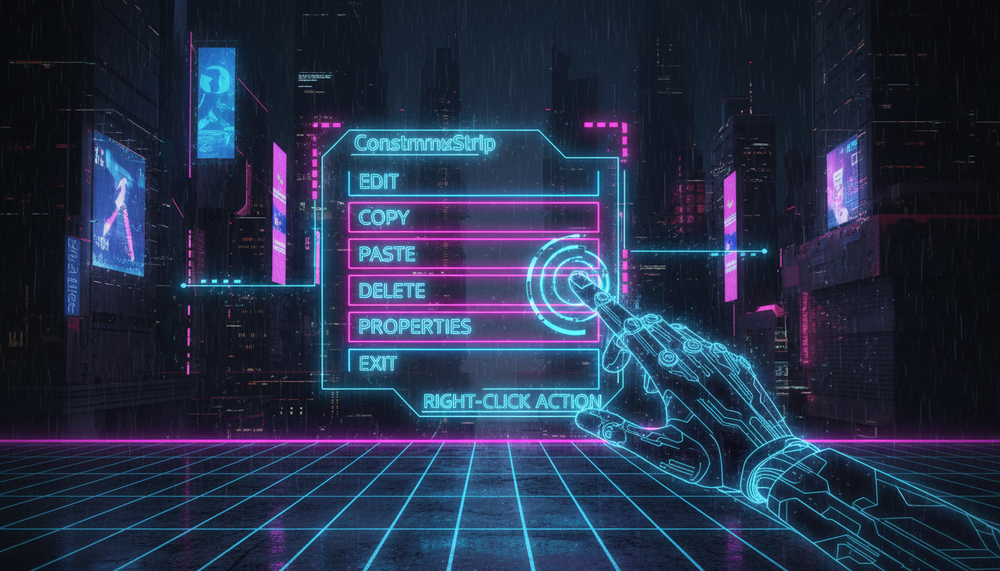

Правий клік, контекстне меню, прив'язка до контролів

// Контекстне меню
ContextMenuStrip^ ctx = gcnew ContextMenuStrip();
ctx->Items->Add("Копіювати", nullptr,
gcnew EventHandler(this, &MyForm::OnCopy));
ctx->Items->Add("Вставити", nullptr,
gcnew EventHandler(this, &MyForm::OnPaste));
ctx->Items->Add(gcnew ToolStripSeparator());
ctx->Items->Add("Видалити", nullptr,
gcnew EventHandler(this, &MyForm::OnDelete));
// Прив'язка до контролу
textBox->ContextMenuStrip = ctx;
listView->ContextMenuStrip = ctx;
// Контекстне меню для форми
this->ContextMenuStrip = ctx;